Campeonato del Mundo de Motociclismo
En esta lista encontrarás todos los podios totales* y victorias* desde 1949 hasta hoy, de las categorías de 50cc, 80cc, 125cc, 250cc, 350cc, 500cc, Moto2, Moto3 y Motogp. *Podios totales es igual a los triunfos conseguidos en los tres escalones. *Victorias es igual a los triunfos conseguidos en el primer escalón. Entre paréntesis, número de victorias. Actualizado el día 06-nov.-22. Última carrera España – Valencia - Cheste
| Pos | Piloto | Imagen | País | Victorias | Podios Totales | Motogp | Moto2 | Moto3 | 250cc | 125cc | 350cc | 80cc | 50cc | Campeonatos Mundiales | |
| 101 | Roberto LOCATELLI |  |
ITA | 9 | 25 | 6 | 19 (9) | 1 (2000 - 125CC) |
|||||||
| 102 | Hans SPAAN |  |
NED | 9 | 21 | 16 (9) | 4 | 1 | |||||||
| 103 | Haruchika AOKI | 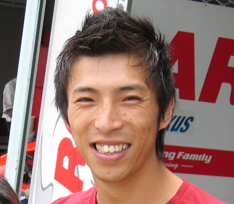 | JPN | 9 | 20 | 1 | 19 (9) | 2 (1995/96 - 125CC) |
|||||||
| 104 | Bill LOMAS |  |
GBR | 9 | 16 | 2 (1) | 1(1) | 1 | 12 (7) | 2 (1955/56 - 350CC) |
|||||
| 105 |
|
ESP | 9 | 13 | 5 (3) | 8 (6) | |||||||||
| 106 | Loris REGGIANI |  |
ITA | 8 | 41 | 1 | 29 (5) | 11 (3) | |||||||
| 107 | Tevo LANSIVUORI |  |
FIN | 8 | 27 | 11 (1) | 5 (2) | 11 (5) | |||||||
| 108 | Hector FAUBEL | 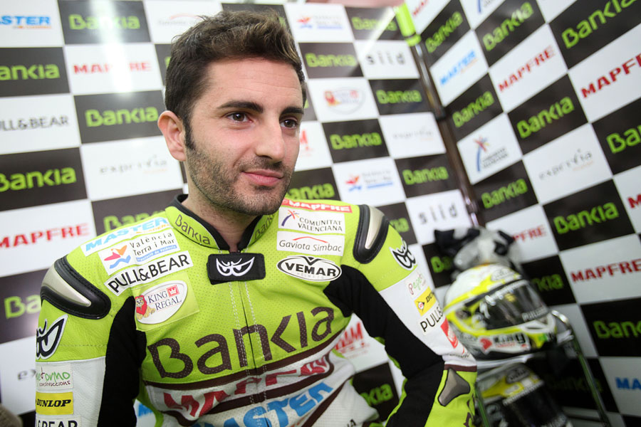 | SPA | 8 | 26 | 1 | 25 (8) | ||||||||
| 109 | Julian SIMON |  |
SPA | 8 | 26 | 12 | 14 (8) | 1 (2009 - 125CC) |
|||||||
| 110 | Franco Morbidelli |  |
ITA | 8 | 22 | 1 | 21 (8) | 1 (2017 - Moto2) |
|||||||
| Pos | Piloto | Imagen | País | Victorias | Podios Totales | Motogp | Moto2 | Moto3 | 250cc | 125cc | 350cc | 80cc | 50cc | Campeonatos Mundiales | |
| 111 | Kenny ROBERTS JR | 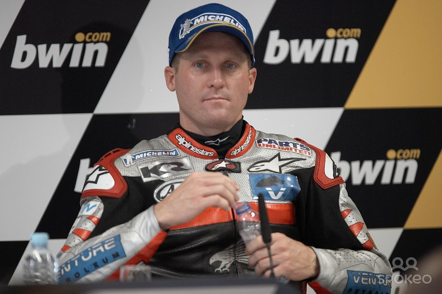 | USA | 8 | 22 | 22 (8) | 1 (2000 - 500CC) |
||||||||
| 112 | Paolo PILERI | 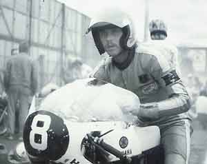 | ITA | 8 | 20 | 4 (1) | 15 (7) | 1 | 1 (1975 - 125CC) |
||||||
| 113 | Leslie GRAHAM |  |
GBR | 8 | 19 | 8 (5) | 2 | 4 (1) | 5 (2) | 1 (1949 - 500CC) |
|||||
| 114 | Danny KENT |  |
GBR | 8 | 14 | 14(8) | 1 (2015 - Moto3) |
||||||||
| 115 |
|
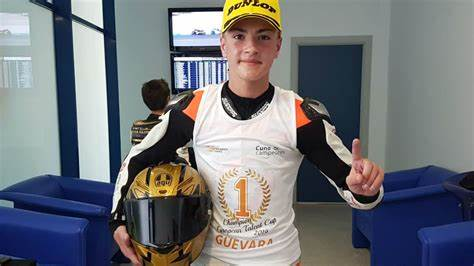 | SPA | 8 | 13 | 13 (8) | |||||||||
| 116 | Chas MORTIMER | GBR | 7 | 39 | 4 (1) | 10 (2) | 18 (3) | 7 (1) | |||||||
| 117 | Christian SARRON |  |
FRA | 7 | 37 | 18 (1) | 15 (6) | 4 | 1
(1984 - 250CC) |
||||||
| 118 | Olivier JACQUE |  |
FRA | 7 | 35 | 1 | 34 (7) | 1
(2000 - 250CC) |
|||||||
| 119 | Alex BARROS | BRA | 7 | 32 | 32 (7) | ||||||||||
| 120 | Reg ARMSTRONG | 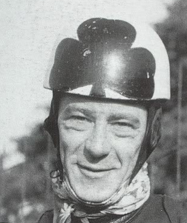 | IRL | 7 | 29 | 16 (4) | 4 (2) | 1 | 8 (1) | ||||||
| Pos | Piloto | Imagen | País | Victorias | Podios Totales | Motogp | Moto2 | Moto3 | 250cc | 125cc | 350cc | 80cc | 50cc | Campeonatos Mundiales | |
| 121 | Sandro CORTESE |  |
GER | 7 | 29 | 3 | 15 (5) | 11 (2) | 1 (2012 - Moto3) |
||||||
| 122 | Henk VAN KESSEL | 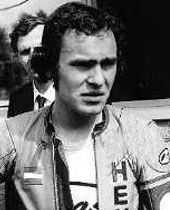 | NED | 7 | 25 | 7 | 2 | 16 (7) | 1
(1974 - 50CC) |
||||||
| 123 | Kel CARRUTHERS |  |
AUS | 7 | 22 | 13 (7) | 2 | 7 | 1 (1969 - 250CC) |
||||||
| 124 | Enrico LORENZETTI | ITA | 7 | 21 | 3 | 12 (5) | 6 (2) | 1 (1952 - 250CC) |
|||||||
| 125 | Franco UNCINI |  |
ITA | 7 | 21 | 11 (5) | 7(2) | 3 | 1 (1982 - 500CC) |
||||||
| 126 | Augusto FERNANDEZ |  |
SPA | 7 | 20 | 20 (7) | |||||||||
| 127 | Sergio GARCIA |  |
SPA | 7 | 20 | 20 (7) | |||||||||
| 128 | Arnaud VINCENT |  |
FRA | 7 | 19 | 19 (7) | 1 (2002 - 125CC) |
||||||||
| 129 | Jonnie EKEROLD |  |
RSA | 7 | 19 | 3 (1) | 16 (6) | 1 (1980 - 350CC) |
|||||||
| 130 | Lucio CECCHINELLO | ITA | 7 | 19 | 19 (7) | ||||||||||
| Pos | Piloto | Imagen | País | Victorias | Podios Totales | Motogp | Moto2 | Moto3 | 250cc | 125cc | 350cc | 80cc | 50cc | Campeonatos Mundiales | |
| 131 | Sebastian PORTO | ARG | 7 | 19 | 19 (7) | ||||||||||
| 132 | Stefan BRADL | 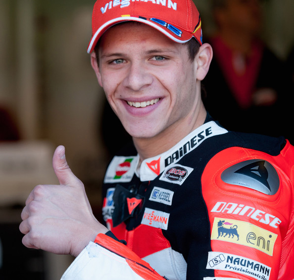 | GER | 7 | 19 | 1 | 12 (5) | 6 (2) | 1 (2011 - Moto2) |
||||||
| 133 | Tadayuki OKADA | JPN | 6 | 36 | 21 (4) | 15 (2) | |||||||||
| 134 | Renzo PASOLINI | 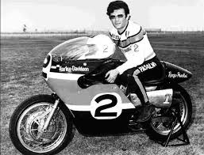 | ITA | 6 | 35 | 1 | 15 (6) | 19 | |||||||
| 135 | Aron CANET |  |
SPA | 6 | 30 | 13 | 17 (6) | ||||||||
| 136 | Marco BEZZECCHI |  |
ITA | 6 | 25 | 1 | 14 (3) | 10 (3) | |||||||
| 137 | Tomomi MANAKO | JPN | 6 | 23 | 23 (6) | ||||||||||
| 138 | Doriano ROMBONI | ITA | 6 | 22 | 1 | 15 (4) | 6 (2) | ||||||||
| 139 | Shinya NAKANO |  |
JPN | 6 | 21 | 3 | 18 (6) | ||||||||
| 140 | Umberto MASETTI |  |
ITA | 6 | 21 | 17 (6) | 3 | 1 | 2 (1950/52 500CC) |
||||||
| Pos | Piloto | Imagen | País | Victorias | Podios Totales | Motogp | Moto2 | Moto3 | 250cc | 125cc | 350cc | 80cc | 50cc | Campeonatos Mundiales | |
| 141 | Tom PHILLIS |  |
AUS | 6 | 20 | 1 | 10 (2) | 9 (4) | 1
(1961 - 125CC) |
||||||
| 142 | Marco LUCCHINELLI |  |
ITA | 6 | 19 | 19 (6) | 1 (1981 - 500CC) |
||||||||
| 143 | Jaume MASIA |  |
SPA | 6 | 17 | 17 (6) | |||||||||
| 144 |
|
 |
AUS | 6 | 17 | 17 (6) | |||||||||
| 145 | Tony ARBOLINO |  |
ITA | 6 | 17 | 5 (3) | 12 (3) | ||||||||
| 146 | Ray AMM | 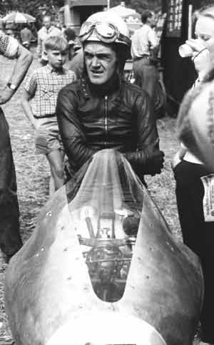 | RHO | 6 | 16 | 7 (2) | 9 (4) | ||||||||
| 147 | Luca MARINI |  |
ITA | 6 | 15 | 15 (6) | |||||||||
| 148 | Libero LIBERATI | 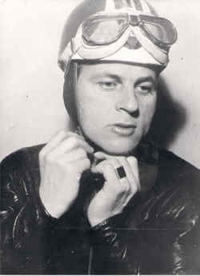 | ITA | 6 | 14 | 8 (4) | 6 (2) | 1 (1957 - 500CC) |
|||||||
| 149 | Aalt TOERSEN | NED | 6 | 13 | 13 (6) | ||||||||||
| 150 | Guy BERTIN | FRA | 6 | 12 | 12 (6) | ||||||||||
| Pos | Piloto | Imagen | País | Victorias | Podios Totales | Motogp | Moto2 | Moto3 | 250cc | 125cc | 350cc | 80cc | 50cc | Campeonatos Mundiales | |
| 151 | Manfred HERWEH | GER | 6 | 12 | 11 (5) | 1 (1) | |||||||||
| 152 | Albert ARENAS |  |
SPA | 6 | 10 | 10 (6) | |||||||||
| 153 | Tohru UKAWA | JPN | 5 | 39 | 10 (1) | 29 (4) | |||||||||
| 154 | John HARTLE | 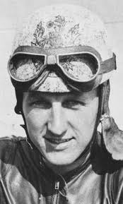 | GBR | 5 | 34 | 17 (3) | 1 (1) | 16 (1) | |||||||
| 155 | Bruno KNEUBÜHLER | SWI | 5 | 33 | 5 | 3 | 17 (3) | 3 (1) | 5 (1) | ||||||
| 156 | Carlos CARDÚS |  |
SPA | 5 | 26 | 26 (5) | |||||||||
| 157 | Jean Francois BALDÉ | FRA | 5 | 26 | 16 (2) | 10 (3) | |||||||||
| 158 | Bob McINTYRE |  |
GBR | 5 | 25 | 8 (1) | 7 (2) | 10 (2) | |||||||
| 159 | Jonas FOLGER |  |
GER | 5 | 24 | 1 | 11 (3) | 8 (1) | 4 (1) | ||||||
| 160 | Ken KAVANAGH | 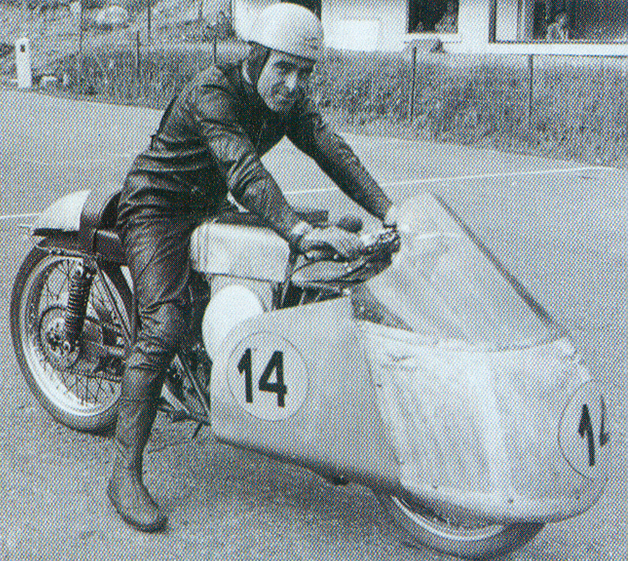 | AUS | 5 | 24 | 9 (1) | 1 | 14 (4) | |||||||
| Pos | Piloto | Imagen | País | Victorias | Podios Totales | Motogp | Moto2 | Moto3 | 250cc | 125cc | 350cc | 80cc | 50cc | Campeonatos Mundiales | |
| 161 | Randy DE PUNIET | FRA | 5 | 24 | 2 | 22 (5) | |||||||||
| 162 | Simone CORSI |  |
ITA | 5 | 21 | 9 | 12 (5) | ||||||||
| 163 | Cecyl SANDFORD |  |
GBR | 5 | 21 | 7 (2) | 11 (3) | 3 | 2 (1952 - 125CC) (1957 - 250CC) |
||||||
| 164 | Helmut BRADL | GER | 5 | 21 | 21 (5) | ||||||||||
| 165 | Peter OETTL | 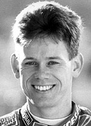 | GER | 5 | 20 | 14 (2) | 6 (3) | ||||||||
| 166 | Stefano PERUGINI | ITA | 5 | 19 | 3 | 16 (5) | |||||||||
| 167 | Fonsi NIETO |  |
SPA | 5 | 18 | 18 (5) | |||||||||
| 168 | August AUINGER | AUT | 5 | 18 | 18 (5) | ||||||||||
| 169 | Garry McCOY | AUS | 5 | 17 | 10 (3) | 7 (2) | |||||||||
| 170 | Lorenzo DALLA PORTA |  |
ITA | 5 | 16 | 16 (5) | 1 (2019 - Moto3) |
||||||||
| Pos | Piloto | Imagen | País | Victorias | Podios Totales | Motogp | Moto2 | Moto3 | 250cc | 125cc | 350cc | 80cc | 50cc | Campeonatos Mundiales | |
| 171 | Mike DI MEGLIO |  |
FRA | 5 | 13 | 2 | 11 (5) | 1 (2008 - 125CC) |
|||||||
| 172 | Takeshi TSUJIMURA | JPN | 5 | 13 | 13 (5) | ||||||||||
| 173 | Celestino VIETTI |  |
ITA | 5 | 13 | 5 (3) | 8 (2) | ||||||||
| 174 | Lorenzo BALDASSARRI |  |
ITA | 5 | 12 | 12 (5) | |||||||||
| 175 | Wil HARTOG |  |
NED | 5 | 12 | 12 (5) | |||||||||
| 176 | Pierfrancesco CHILI | ITA | 5 | 11 | 3 (1) | 8 (4) | |||||||||
| 177 | Masaki TOKUDOME | JPN | 5 | 11 | 11 (5) | ||||||||||
| 178 | Rupert HOLLAUS | 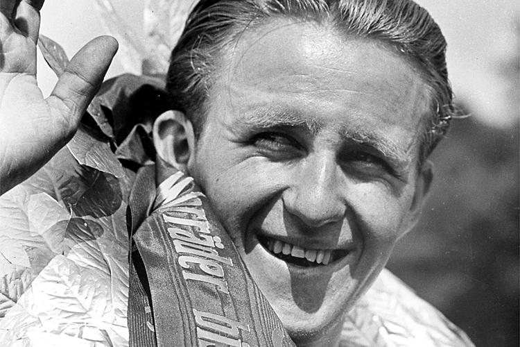 | AUT | 5 | 10 | 5 (1) | 5 (4) | 1 (1954 - 125CC) |
|||||||
| 179 | Dario AMBROSINI |  |
ITA | 5 | 8 | 8 (5) | 1 (1950 - 250CC) |
||||||||
| 180 | Freddie FRITH | 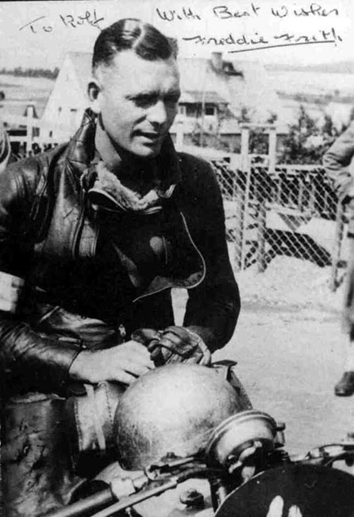 | GBR | 5 | 5 | 5 (5) | 1 (1949 - 350CC) |
||||||||
| Pos | Piloto | Imagen | País | Victorias | Podios Totales | Motogp | Moto2 | Moto3 | 250cc | 125cc | 350cc | 80cc | 50cc | Campeonatos Mundiales | |
| 181 | Alex DE ANGELIS | 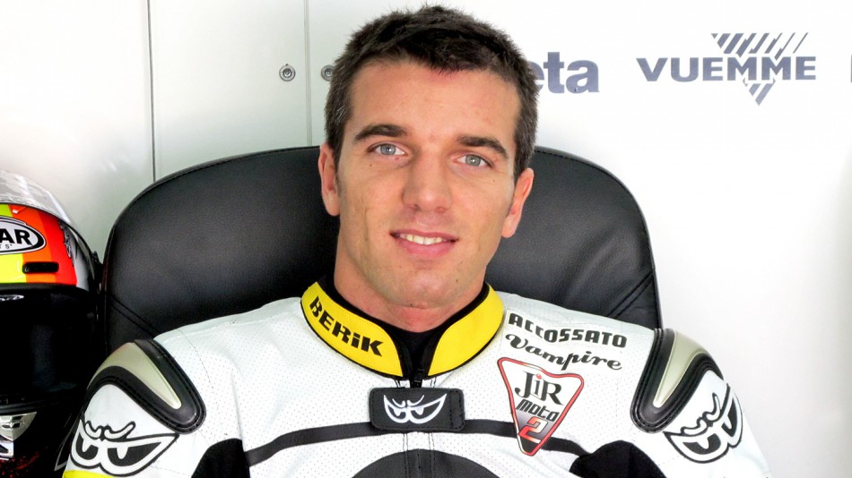 | RSM | 4 | 40 | 1 | 7 (3) | 25 (1) | 7 | ||||||
| 182 | Emilio ALZAMORA |  |
SPA | 4 | 30 | 4 | 26 (4) | 1 (1999 - 125CC) |
|||||||
| 183 | Borje JANSSON | SWE | 4 | 25 | 4 (1) | 20 (3) | 1 | ||||||||
| 184 | John DODDS | AUS | 4 | 21 | 3 | 11 (2) | 1 (1) | 6 (1) | |||||||
| 185 | Roberto ROLFO | ITA | 4 | 20 | 2 (1) | 18 (3) | |||||||||
| 186 | Franta STASTNY | TCH | 4 | 20 | 5 (1) | 1 | 14 (3) | ||||||||
| 187 | Scott REDDING | 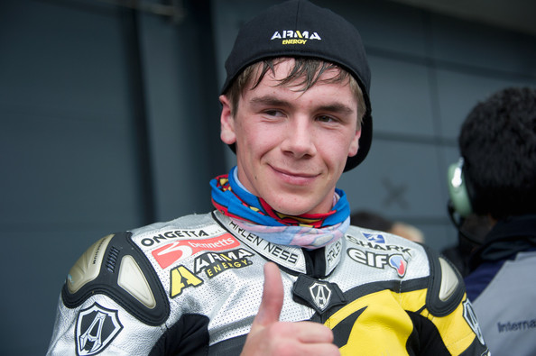 | GBR | 4 | 17 | 2 | 13 (3) | 2 (1) | |||||||
| 188 | John MCPHEE |  |
GBR | 4 | 16 | 16 (4) | |||||||||
| 189 | Dominique SARRON | FRA | 4 | 16 | 16 (4) | ||||||||||
| 190 | Didier DE RADIGUES | BEL | 4 | 15 | 2 | 8 (2) | 5 (2) | ||||||||
| Pos | Piloto | Imagen | País | Victorias | Podios Totales | Motogp | Moto2 | Moto3 | 250cc | 125cc | 350cc | 80cc | 50cc | Campeonatos Mundiales | |
| 191 | Herbert RITTBERGER | GER | 4 | 14 | 14 (4) | ||||||||||
| 192 | Kuninitsu TAKAHASHI | JPN | 4 | 14 | 5 (1) | 8 (3) | 1 | ||||||||
| 193 | Yoshimi KATAYAMA | JPN | 4 | 12 | 7 (1) | 5 (3) | |||||||||
| 194 | Gilberto PARLOTTI | ITA | 4 | 12 | 1 | 8 (4) | 3 | ||||||||
| 195 | Gerhard WAIBEL |  |
GER | 4 | 11 | 10 (3) | 1 (1) | ||||||||
| 196 | Nello PAGANI |  |
ITA | 4 | 11 | 9 (2) | 2 (2) | 1
(1949 - 125CC) |
|||||||
| 197 | Santiago HERRERO |  |
SPA | 4 | 11 | 9 (4) | 2 | ||||||||
| 198 | Bruno RUFFO |  |
ITA | 4 | 10 | 8 (3) | 2 (1) | 3 (1949-51 - 250CC) (1950 - 125CC) |
|||||||
| 199 | Barry SMITH | AUS | 4 | 10 | 1 | 1 (1) | 8 (3) | ||||||||
| 200 | Niccolò ANTONELLI |  |
ITA | 4 | 11 | 11 (4) | |||||||||
| Pos | Piloto | Imagen | País | Victorias | Podios Totales | Motogp | Moto2 | Moto3 | 250cc | 125cc | 350cc | 80cc | 50cc | Campeonatos Mundiales |